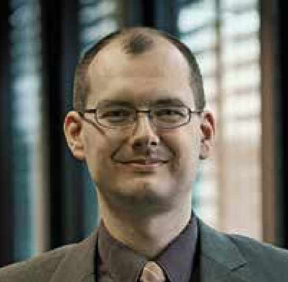

<div class="content">
  <div class="pure-g">
    <div class="pure-u-md-4-5">
      <div class="l-box">
        <h2>Lehr- und Forschungsgebiete</h2>
        <p> Meine Interessen liegen auf dem Gebiet der
          Informatik. Im Fokus stehen dabei die folgenden
          Themengebiete: </p>
        <ul class="list">
          <li> IT-Sicherheit </li>
          <li> Kryptographie 
          <ul class="list">
            <li> Hashfunktionen </li>
            <li> Passworthashing </li>
            <li> Message Authentication Codes </li>
            <li> Protokolle zur sicheren Kommunikation</li>
            <li> Symmetrische Verschlüsselungsverfahren </li>
            <li> Verfahren zur authentisierten Verschlüsselung </li>
          </ul></li>
          <li> Programmieren </li>
          <li> Algorithmen und Datenstrukturen </li>
          <li> Betriebssysteme (insbesondere GNU/Linux) </li>
        </ul>

        <h2>Forschung und Publikationen</h2>
        Ich habe an den folgenden internationalen Wettbewerben
        teilgenommen.
        <ul class="list">
          <li>  <a href="https://en.wikipedia.org/wiki/NIST_hash_function_competition" target="_blank" rel="noopener noreferrer">
              SHA-3 Competition</a> mit Twister (1. Runde)</li>
          <li>   <a href="https://password-hashing.net/" target="_blank" rel="noopener noreferrer">
              Password Hashing Competition</a> mit Catena (Finale)</li>
          <li> <a href="https://competitions.cr.yp.to/caesar-submissions.html"
                  target="_blank" rel="noopener noreferrer">CAESAR: Competition for
              Authenticated Encryption: Security, Applicability, and Robustness</a>
            mit POET (2. Runde) </li>
        </ul>

        Meine Publikationsliste finden Sie
        <a href="https://dblp.uni-trier.de/pers/hd/f/Forler:Christian" target="_blank" rel="noopener noreferrer">hier</a>.

        <h2>Meine Vorlesungen an der BHT</h2>
        <ul class="list">
          <li> Computerarchitektur und Betriebssysteme </li>
          <li> Algorithmen und Datenstrukturen </li>
          <li> Sicherheit digitaler Systeme </li>
          <li> Vertiefung Echtzeitsysteme  </li>
          <li> Theoretische Informatik</li>
          <li> Systemprogrammierung </li>
          <li> Netzwerksicherheit </li>
          <li> Echt          <li> Sicherheit digitaler Systeme </li>zeitsysteme  </li>
          <li> IT-Sicherheit </li>
        </ul>

        <h2>Mein Labor</h2>
        Ich bin Mitglied des Pervasive Systems Engineering
        Labors (PSE-Labor). Mehr Informationen gibt es
        <a href="https://labor.bht-berlin.de/pse/" target="_blank" rel="noopener noreferrer">hier</a>.
      </div>
    </div>

    <div class="pure-u-md-1-5">
      <div class="l-box">
        <h2>Kontakt</h2>
        
        <p>Prof. Dr. Christian Forler</p>
        <p><strong>Telefon:</strong> (030) 4504 - 2687</p>
        <p><strong>E-Mail:</strong> cforler [at] bht-berlin.de</p>
        <p><strong>Büro:</strong> Haus Bauwesen, Raum D134</p>
        <p><strong>Adresse:</strong><br>
          Berliner Hochschule für Technik <br>
          Fachbereich VI - Informatik und Medien <br>
          Luxemburger Str. 10 <br>
          13353 Berlin </p>
	<p><strong>Bürosprechzeiten (SoSe 2022):</strong><br>
          Mittwoch: 12:00 Uhr - 13:30 Uhr 
        </p>
      </div>
    </div>
  </div>
</div>
